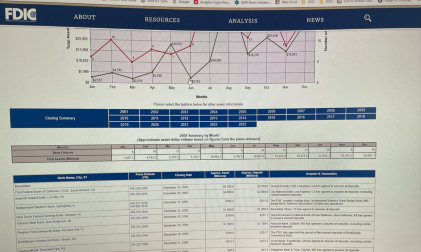

FDIC: Bank Failures in Brief Website Redesign
Challenge
As part of the FDIC’s mission to maintain stability in the U.S. financial system, the Bank Failures in Brief (BFB) website provides public summaries of failed banks dating back to 2001. Originally built as static narrative pages, the site became overloaded during the 2008–2014 recession period when over 550 banks closed. The volume of data caused major usability and accessibility challenges for both the public and FDIC stakeholders.
Task
Redesign the legacy site into a dynamic, data-driven, interactive, and accessible platform capable of handling large volumes of information while maintaining accuracy, compliance, and transparency.
Action
Role: Project Lead
- Leadership & Collaboration – Directed end-to-end project activities including stakeholder consultation, requirements gathering, risk analysis, strategic planning, data analysis, design and development, testing, accessibility audits, and launch. Managed a team of three members while serving as the primary point of contact for FDIC leadership.
- Data Preparation – Collected, validated, and structured records for 553 failed banks in Excel, ensuring complete accuracy before development.
- User Research & Design – Conducted stakeholder interviews and surveys to define requirements. Designed prototypes and introduced a Summary Page with an interactive graph of closures (2001–2019).
- Interactive Features – Dynamic visualizations to simplify exploration, year-based navigation and implemented sortable/searchable tables.
- Implementation – Delivered 20 redesigned pages, including the interactive summary landing page, yearly detail pages, and a consolidated downloadable CSV file.
- Accessibility & Compliance – Conducted Section 508 testing for all content, graphs, and downloadable files.
- Timeline – Completed and launched Phase 1 in 11 months after rigorous validation and testing.
Results
- Achieved a 30% increase in web traffic within six months of launch.
- Site ranking in the web traffic report improved from 10–15th place to top 4, consistently maintained for 5+ years.
- Praised by FDIC leadership; adopted as the official template for future FDIC websites.
- Significantly improved transparency, navigation, accessibility, and stakeholder confidence.
View the current site - FDIC Bank Failures in Brief
Lessons Learned
- Technical: Ensuring accuracy across 553 bank records, achieving full Section 508 compliance, and optimizing responsive performance of interactive elements.
- Leadership: When the project manager left early in the process, I assumed full leadership responsibilities. This experience sharpened my skills in project management, cross-functional collaboration, and stakeholder communication under pressure.
In the Media
The redesigned Bank Failures in Brief website continues to align with ongoing discussions in financial analysis and public transparency. Related articles that highlight the importance of bank failures data include:
 Capital Ideas – Will Additional Bank Failures Take Us Back to 2008?
Capital Ideas – Will Additional Bank Failures Take Us Back to 2008?
 What are the biggest bank failures in U.S. history? - TheStreet
What are the biggest bank failures in U.S. history? - TheStreet
 Bank failure is not something unusual in the United States
Bank failure is not something unusual in the United States
 The U.S. is Saving Billionaires from Bank Failures | SWAN Capital
The U.S. is Saving Billionaires from Bank Failures | SWAN Capital
 The RARE Advisor: Comparing the Bank Failure to Assets Under Duress Ratio
The RARE Advisor: Comparing the Bank Failure to Assets Under Duress Ratio
Contact Me
 nair.rasmi@gmail.com
nair.rasmi@gmail.com
 +1 571 243 0827
+1 571 243 0827